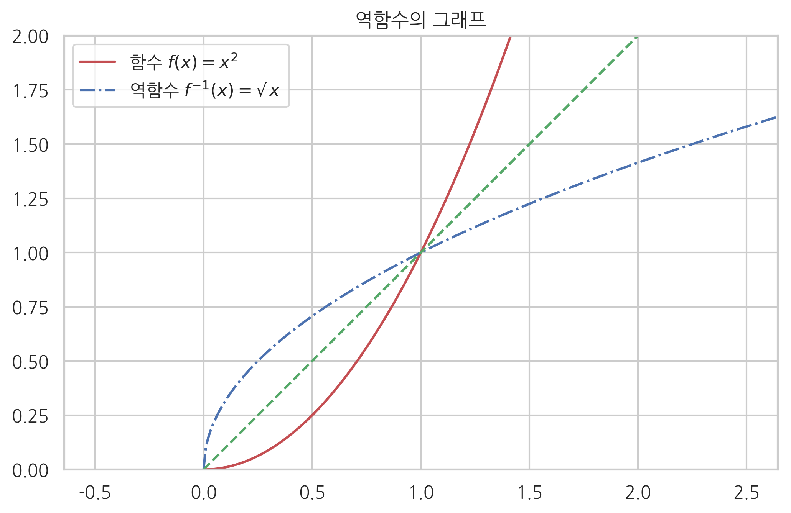
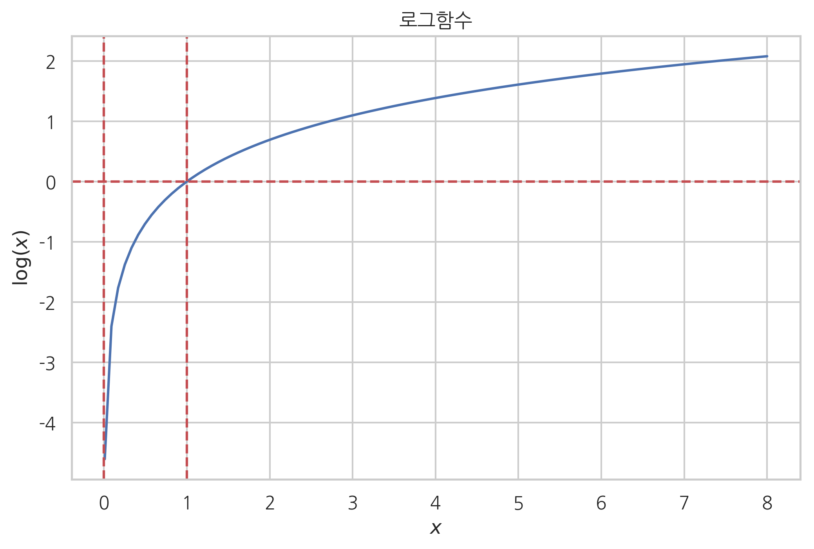
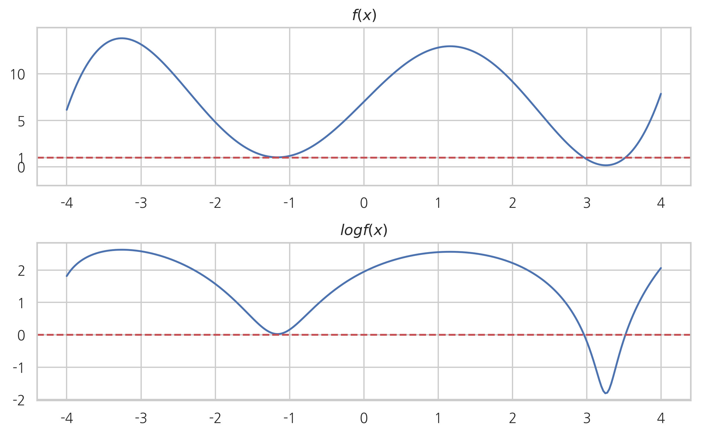
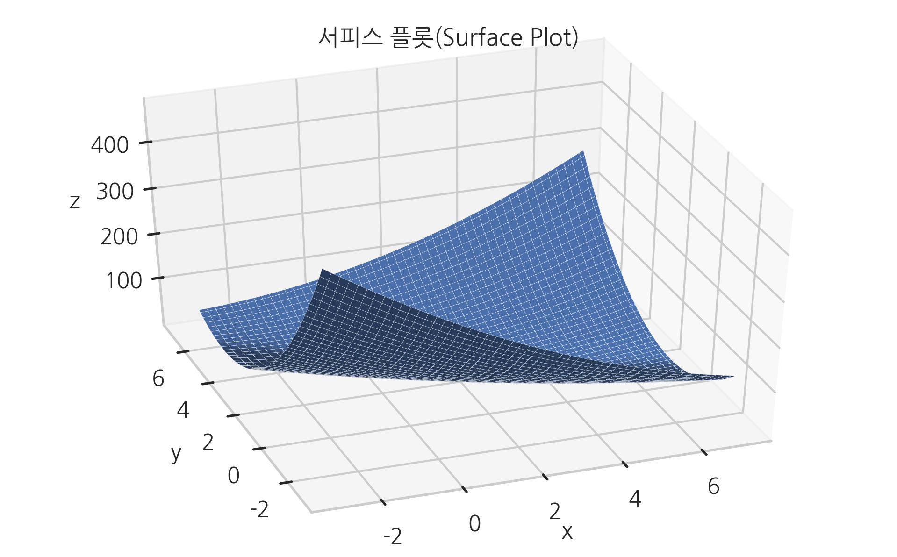
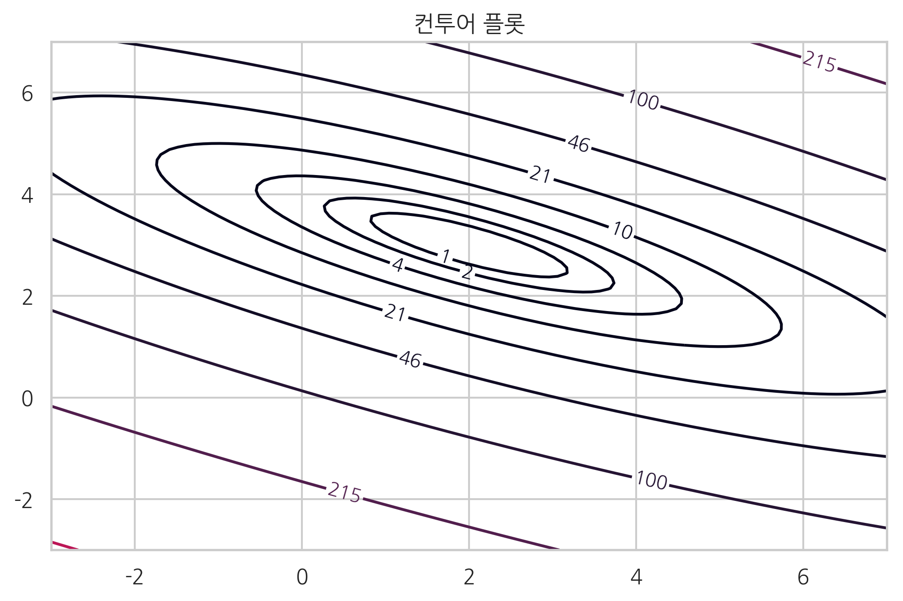
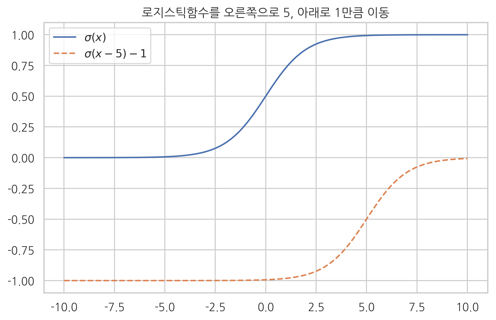

# 함수 정의
f = {
1: 2,
2: 4,
3: 6,
4: 8,
5: 10,
}
# 함수 사용
f[1]
2
# 함수 정의
def f(x):
return 2 * x
# 함수 사용
x = 10
y = f(x)
print("f({}) = {}".format(x, y))
f(10) = 20
np.sign(-0.0001), np.sign(0), np.sign(0.0001)
(-1.0, 0, 1.0)
def heaviside_step(x):
if isinstance(x, np.ndarray):
return np.where(x >= 0, 1, 0)
else:
return 1.0 if x >= 0 else 0.0
heaviside_step(-0.0001), heaviside_step(0), heaviside_step(0.0001)
(0.0, 1.0, 1.0)
def f(x):
return x**3 - 3 * x**2 + x
x = np.linspace(-1, 3, 9)
x
array([-1. , -0.5, 0. , 0.5, 1. , 1.5, 2. , 2.5, 3. ])
y = f(x)
y
array([-5. , -1.375, 0. , -0.125, -1. , -1.875, -2. , -0.625,
3. ])
plt.plot(x, y, 'ro-')
plt.xlim(-2, 4)
plt.title("함수 $f(x) = x^3 - 3x^2 + x$의 그래프")
plt.xlabel("x")
plt.ylabel("y")
plt.xticks(np.arange(-1, 4))
plt.yticks(np.arange(-5, 4))
plt.show()

x = np.linspace(-1, 3, 400)
y = f(x)
plt.plot(x, y)
plt.xlim(-2, 4)
plt.title("함수 $f(x) = x^3 - 3x^2 + x$의 그래프")
plt.xlabel("x")
plt.ylabel("y")
plt.xticks(np.arange(-1, 4))
plt.yticks(np.arange(-5, 4))
plt.show()

def f1(x):
return x ** 2
def f1inv(x):
return np.sqrt(x)
x = np.linspace(0, 3, 300)
plt.plot(x, f1(x), "r-", label="함수 $f(x) = x^2$")
plt.plot(x, f1inv(x), "b-.", label="역함수 $f^{-1}(x) = \sqrt{x}$")
plt.plot(x, x, "g--")
plt.axis("equal")
plt.xlim(0, 2)
plt.ylim(0, 2)
plt.legend()
plt.title("역함수의 그래프")
plt.show()

xx = np.linspace(-10, 10, 100)
plt.plot(xx, np.maximum(xx, 0))
plt.title("max(x,0) 또는 ReLU")
plt.xlabel("$x$")
plt.ylabel("$ReLU(x)$")
plt.show()

np.e
2.718281828459045
np.exp(-10), np.exp(-1), np.exp(-0.1), np.exp(0), np.exp(0.1), np.exp(1), np.exp(10)
(4.5399929762484854e-05,
0.36787944117144233,
0.9048374180359595,
1.0,
1.1051709180756477,
2.718281828459045,
22026.465794806718)
xx = np.linspace(-2, 2, 100)
yy = np.exp(xx)
plt.title("지수함수")
plt.plot(xx, yy)
plt.axhline(1, c='r', ls="--")
plt.axhline(0, c='r', ls="--")
plt.axvline(0, c='r', ls="--")
plt.xlabel("$x$")
plt.ylabel("$\exp(x)$")
plt.show()

np.exp(2 + 3), np.exp(2) * np.exp(3)
(148.4131591025766, 148.4131591025766)
def logistic(x):
return 1 / (1 + np.exp(-x))
xx = np.linspace(-10, 10, 100)
plt.plot(xx, logistic(xx))
plt.title("로지스틱함수")
plt.xlabel("$x$")
plt.ylabel("$\sigma(x)$")
plt.show()

np.exp(2), np.exp(3)
(7.38905609893065, 20.085536923187668)
np.exp(2.3025851)
10.000000070059542
np.log(10)
2.302585092994046
xx = np.linspace(0.01, 8, 100)
yy = np.log(xx)
plt.title("로그함수")
plt.plot(xx, yy)
plt.axhline(0, c='r', ls="--")
plt.axvline(0, c='r', ls="--")
plt.axvline(1, c='r', ls="--")
plt.xlabel("$x$")
plt.ylabel("$\log(x)$")
plt.show()

def ff(x):
return x**3 - 12*x + 20 * np.sin(x) + 7
xx = np.linspace(-4, 4, 300)
yy = ff(xx)
plt.subplot(211)
plt.plot(xx, yy)
plt.axhline(1, c='r', ls="--")
plt.yticks([0, 1, 5, 10])
plt.ylim(-2, 15)
plt.title("$f(x)$")
plt.subplot(212)
plt.plot(xx, np.log(yy))
plt.axhline(0, c='r', ls="--")
plt.title("$log f(x)$")
plt.tight_layout()
plt.show()

np.random.seed(0)
x = np.random.rand(5)
x = x / x.sum()
plt.subplot(211)
plt.title("0, 1 사이 숫자들의 $\log$ 변환")
plt.bar(range(1, 6), x)
plt.ylim(0, 1)
plt.ylabel("x")
plt.subplot(212)
plt.bar(range(1, 6), np.log(x))
plt.ylabel("log x")
plt.show()

def softplus(x):
return np.log(1 + np.exp(x))
xx = np.linspace(-10, 10, 100)
plt.plot(xx, softplus(xx))
plt.title("소프트플러스함수")
plt.xlabel("$x$")
plt.ylabel("Softplus($x$)")
plt.show()

def f(x, y):
return 2 * x**2 + 6 * x * y + 7 * y**2 - 26 * x - 54 * y + 107
xx = np.linspace(-3, 7, 100)
yy = np.linspace(-3, 7, 100)
X, Y = np.meshgrid(xx, yy)
Z = f(X, Y)
fig = plt.figure()
ax = fig.gca(projection='3d')
ax.plot_surface(X, Y, Z, linewidth=0.1)
ax.view_init(40, -110)
plt.xlabel('x')
plt.ylabel('y')
ax.set_zlabel('z')
plt.title("서피스 플롯(Surface Plot)")
plt.show()

CS = plt.contour(X, Y, Z, levels=np.logspace(0, 3, 10))
plt.clabel(CS, fmt="%d")
plt.title('컨투어 플롯')
plt.show()

from matplotlib import transforms
from matplotlib.ticker import NullFormatter
def g1(x):
return np.exp(-x ** 2)
def g2(y):
return np.exp(-16 * y ** 2)
def g(x, y):
return g1(x) * g2(y)
xx = np.linspace(-1, 1, 100)
yy = np.linspace(-1, 1, 100)
X, Y = np.meshgrid(xx, yy)
Z = g(X, Y)
left, width = 0.1, 0.65
bottom, height = 0.1, 0.65
bottom_h = left_h = left + width + 0.02
rect = [left, bottom, width, height]
rectx = [left, bottom_h, width, 0.2]
recty = [left_h, bottom, 0.2, height]
plt.figure(1, figsize=(8, 8))
ax = plt.axes(rect)
axx = plt.axes(rectx)
axy = plt.axes(recty)
nullfmt = NullFormatter()
axx.xaxis.set_major_formatter(nullfmt)
axy.yaxis.set_major_formatter(nullfmt)
ax.contour(X, Y, Z)
ax.axhline(0, c='r', ls="-")
ax.axhline(0.1, c='g', ls="--")
ax.axhline(0.2, c='b', ls="-.")
ax.axhline(0.3, c='c', ls=":")
ax.set_xlabel("x")
ax.set_ylabel("y")
axx.plot(xx, g1(xx), c='r')
axx.plot(xx, g2(0.1) * g1(xx), c='g', ls="--")
axx.plot(xx, g2(0.2) * g1(xx), c='b', ls="-.")
axx.plot(xx, g2(0.3) * g1(xx), c='c', ls=":")
axx.set_title("g1(x)")
axx.text(-0.2, 0.3, "y=0.3로 자른 단면")
axx.text(-0.2, 0.6, "y=0.2으로 자른 단면")
axx.text(-0.2, 0.9, "y=0.1로 자른 단면")
base = axy.transData
rot = transforms.Affine2D().rotate_deg(-90)
axy.plot(yy, g2(yy), transform=rot + base)
axy.set_title("g2(y)")
axy.axhline(0, xmax=g2(0), c='r', ls="-")
plt.text(0.05, 0.02, "$g_2$(0)={:.2f}".format(g2(0)))
axy.axhline(0.1, xmax=g2(0.1), c='g', ls="--")
plt.text(0.05, 0.12, "$g_2$(0.1)={:.2f}".format(g2(0.1)))
axy.axhline(0.2, xmax=g2(0.2), c='b', ls="-.")
plt.text(0.05, 0.22, "$g_2$(0.2)={:.2f}".format(g2(0.2)))
axy.axhline(0.3, xmax=g2(0.3), c='c', ls=":")
plt.text(0.05, 0.32, "$g_2$(0.3)={:.2f}".format(g2(0.3)))
axx.set_xlim(ax.get_xlim())
axx.set_ylim(0, 1)
axy.set_ylim(ax.get_ylim())
axy.set_xlim(0, 1)
plt.suptitle("$g(x, y) = \exp(-x^2)\exp(-16y^2) = g_1(x)g_2(y)$의 그래프", y=1.04)
plt.show()

def softmax(x, w): # x는 1차원 배열, w는 가중치 벡터
e = np.exp(w * x)
return np.exp(w * x) / e.sum()
x = [2.0, 1.0, 0.5]
y = softmax(x, np.ones(3))
y
array([0.62853172, 0.2312239 , 0.14024438])
np.sum(y)
1.0
softmax(x, 4 * np.ones(3))
array([0.97962921, 0.01794253, 0.00242826])
xx = np.linspace(-10, 10, 100)
plt.plot(xx, logistic(xx), label="$\sigma(x)$", ls="-")
plt.plot(xx, logistic(xx-5)-1, label="$\sigma(x-5)-1$", ls="--")
plt.legend()
plt.title("로지스틱함수를 오른쪽으로 5, 아래로 1만큼 이동")
plt.show()

def g(x, y):
return np.exp(-x ** 2 -16 * y ** 2)
xx = np.linspace(-1, 1, 100)
yy = np.linspace(-1, 1, 100)
X, Y = np.meshgrid(xx, yy)
Z1 = g(X, Y)
Z2 = g(X-0.5, Y-0.75)
plt.contour(X, Y, Z1)
plt.contour(X, Y, Z2, linestyles="--")
plt.text(-0.05, -0.02, "f(x,y)")
plt.text(0.35, 0.73, "f(x-0.5,y-0.75)")
plt.ylim(-0.5, 1)
plt.title("다변수함수의 평행이동")
plt.show()

xx = np.linspace(-6, 6, 100)
plt.plot(xx, logistic(xx), label="$\sigma(x)$", ls="-")
plt.plot(xx, 2*logistic(2*xx), label="2$\sigma(2x)$", ls="--")
plt.legend()
plt.title("로지스틱함수를 x축 방향으로 1/2배, y축 방향으로 2배")
plt.show()